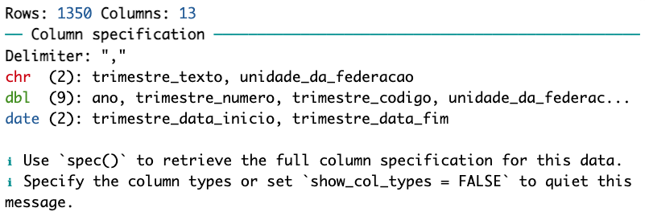
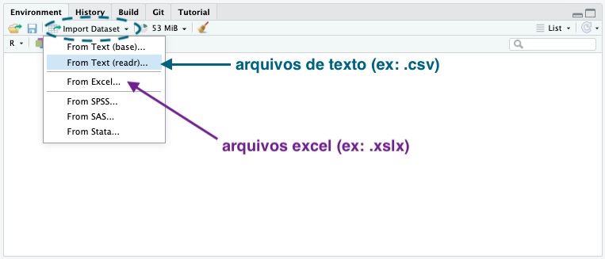

library(readr)Importando dados
O objetivo da etapa de importação é carregar a base de dados para a memória RAM do computador. Assim conseguiremos utilizar os dados no R.
Essa etapa pode ser bem rápida (ou não!). Depende da base de dados que precisamos carregar.
Nesta etapa, vamos aprender:
Como importar dados de arquivos locais (arquivos que estão salvos no nosso computador) para dentro do R;
Como exportar dados do R dados (salvar objetos do R em arquivos que ficarão salvos no nosso computador);
Como importar dados usando pacotes de dados, como o
{sidrar}.
Ao final, teremos também uma lista com sugestão de materiais extras, caso queira aprofundar mais sobre o assunto.
Importante
Atenção: Nessa aula o conceito de caminho relativo será muito importante. Caso esteja com dúvidas sobre o tema, revise a aula sobre “Diretório de trabalho e Projetos”.
Nesta aula, utilizaremos alguns arquivos baixados na aula Diretórios de trabalho e projetos > Preparando o projeto para o curso.
Importando dados de um arquivo local
Para importar dados de um arquivo local, você pode usar funções com o prefixo read_ de pacotes como {readr} e {readxl}.
Arquivos de texto (ex: .csv)
O pacote {readr} permite a leitura de arquivos de texto separados por algum delimitador, como .csv, .tsv e .txt.
Para realizar a importação de um arquivo deste tipo, é importante saber qual é o delimitador utilizado no arquivo.
A sigla CSV signfica Comma Separated Values, ou seja, valores separados por vírgula. Por padrão, a função read_csv() do pacote {readr} importa arquivos .csv com delimitador ,.
No Brasil, é comum a utilização do ; como delimitador, e para isso podemos utilizar a função read_csv2(). Isso acontece pois utilizamos a vírgula como separador decimal (Ex: 4,20) e isso pode causar problemas na importação de arquivos .csv com delimitador ,.
Caso o arquivo tenha outro delimitador, você pode utilizar a função read_delim() e especificar o delimitador com o argumento delim.
Ao importar, uma mensagem aparecerá no console apresentando algumas informações sobre a importação, como:
número de linhas;
número de colunas;
delimitador utilizado;
tipos de colunas;
nome das colunas por tipo;
quantidade de colunas importadas por tipo.

Arquivo de texto separado por vírgula (,)
# Importando dados de um arquivo .csv
dados_csv <- read_csv("dados/sidrar_4092_bruto.csv")Rows: 27000 Columns: 13
── Column specification ────────────────────────────────────────────────────────
Delimiter: ","
chr (6): Nível Territorial, Unidade de Medida, Unidade da Federação, Trimest...
dbl (7): Nível Territorial (Código), Unidade de Medida (Código), Valor, Unid...
ℹ Use `spec()` to retrieve the full column specification for this data.
ℹ Specify the column types or set `show_col_types = FALSE` to quiet this message.Arquivo de texto separado por ponto e vírgula (;)
# Importando dados de um arquivo .csv
# Com separador ponto e vírgula
dados_csv_2 <- read_csv2("dados/sidrar_4092_bruto_2.csv")ℹ Using "','" as decimal and "'.'" as grouping mark. Use `read_delim()` for more control.Rows: 27000 Columns: 13
── Column specification ────────────────────────────────────────────────────────
Delimiter: ";"
chr (6): Nível Territorial, Unidade de Medida, Unidade da Federação, Trimest...
dbl (7): Nível Territorial (Código), Unidade de Medida (Código), Valor, Unid...
ℹ Use `spec()` to retrieve the full column specification for this data.
ℹ Specify the column types or set `show_col_types = FALSE` to quiet this message.Arquivos Excel (ex: .xlsx)
O pacote {readxl} permite a leitura de arquivos do Excel.
# Carregando o pacote readxl
library(readxl)A função excel_sheets() do pacote {readxl} retorna o nome das planilhas (Sheets) disponíveis em um arquivo Excel:
excel_sheets("dados/sidrar_4092_bruto.xlsx")[1] "Sheet1"A função read_excel() do pacote {readxl} permite a leitura de uma planilha específica de um arquivo Excel, utilizando o argumento sheet para especificar o nome da planilha. Caso o argumento sheet não seja fornecido, a função importará a primeira planilha do arquivo.
# Importando dados de uma planilha do Excel
dados_excel <- read_excel("dados/sidrar_4092_bruto.xlsx", sheet = "Sheet1")Arquivo binário do R (.rds)
A função read_rds() do pacote {readr} permite importar um arquivo binário do R. Um arquivo binário do R é um formato que preserva a integridade dos tipos de dados ao salvar e carregar objetos1.
dados <- read_rds("dados/sidrar_4092_bruto.rds")Import Dataset do RStudio
Caso você esteja com dificuldades, uma dica é usar a funcionalidade Import Dataset do RStudio. Essa funcionalidade permite utilizar uma interface point-and-click para importar dados, e apresenta o código utilizado para a importação.
Dica
O mais importante ao usar essa funcionalidade é copiar e colar o código gerado no seu script, para que você possa reutilizá-lo posteriormente.
Para acessar a funcionalidade Import Dataset, clique em Import Dataset no canto superior direito do painel Environment do RStudio. Caso o arquivo seja um Excel, escolha a opção From Excel. Caso o arquivo seja um texto separado por algum delimitador (como CSV), escolha a opção From Text (readr).

Salvando dados localmente
Para salvar dados localmente, você pode usar funções com o prefixo write_ de pacotes como {readr} e {writexl}. Essas funções solicitam dois argumentos principais:
Qual é o objeto que você queremos salvar? Esse objeto deve estar disponível no Environment do R.
Onde queremos salvar o arquivo? O caminho completo do arquivo deve ser fornecido entre aspas, contendo o diretório onde ele será salvo (em qual pasta do computador) e o nome do arquivo (com a extensão, por exemplo,
.csv).
Antes de salvar os dados, vamos criar um diretório onde salvaremos os arquivos. Você pode criar o diretório manualmente ou usar a função fs::dir_create("nome_do_diretorio/") para criar o diretório.
library(fs)
dir_create("dados_output")
Aviso
Atenção: O diretório (pasta no computador) onde o arquivo será salvo deve existir previamente, se não gerará um erro similar a este:
Error: Cannot open file for writing:
* 'dados_output/sidrar_4092_salvo.csv'Arquivo de texto (ex: .csv)
O pacote {readr} permite a escrita de arquivos de texto separados por algum delimitador, como .csv, .tsv e .txt.
A função write_csv2() premite a escrita de arquivos .csv com separador ;, que é o padrão no Brasil.
write_csv2(dados, "dados_output/sidrar_4092_bruto.csv")Arquivo excel (ex: .xlsx)
A função write_xlsx() do pacote {writexl} permite a escrita de arquivos do Excel.
library(writexl)
write_xlsx(dados, "dados_output/sidrar_4092_bruto.xlsx")Arquivo binário do R (.rds)
A função write_rds() do pacote {readr} permite salvar um objeto do R em um arquivo binário do R, preservando a estrutura dos objetos.
Esse tipo de arquivo é útil para salvar objetos do R, como dataframes, listas, vetores, sem perder a estrutura do objeto.
write_rds(dados, "dados_output/sidrar_4092_bruto.rds")Importando dados usando pacotes de dados
Existem pacotes no R que permitem a importação de dados, como por exemplo: {sidrar}, {geobr}, {censobr}, entre outros.
A parte boa de usar esses pacotes é que eles já possuem funções prontas para importar os dados.
A parte não-tão-boa é que os pacotes tem funções específicas para importar os dados, e você precisa aprender como usar essas funções. Recomendamos que você leia a documentação do pacote para entender como usar as funções de importação.
Ao longo deste curso, vamos aprender a usar alguns desses pacotes para importar dados específicos.
Importante
Esses pacotes, em geral, obtém as informações na internet. Isso pode demorar um pouco.
Recomendamos que você salve uma cópia local dos dados brutos após o download. Isso evita a necessidade de baixar os dados novamente e facilita o trabalho localmente, principalmente se a conexão com a internet estiver instável.
Alguns pacotes, como o {censobr}, apresentam funções preparadas para salvar os dados localmente.
Pacote {sidrar}
O pacote {sidrar} permite a importação de dados do Sistema IBGE de Recuperação Automática (SIDRA).
library(sidrar)Para importar dados do SIDRA, você precisa saber o código da tabela que deseja importar. Uma forma de fazer isso é buscar no site do SIDRA, no IBGE: https://sidra.ibge.gov.br/.
Buscando tabelas no SIDRA
Outra forma é buscar por palavras-chave no próprio R, utilizando a função search_sidra():
# Exemplo de busca por palavras-chave:
# Tabelas com resultados da PNAD Contínua Trimestral
search_sidra("PNADCT") [1] "Tabela 5435 - Pessoas de 14 anos ou mais de idade, ocupadas na semana de referência, por grupamento ocupacional no trabalho principal"
[2] "Tabela 5444 - Rendimento médio mensal real das pessoas de 14 anos ou mais de idade ocupadas na semana de referência com rendimento de trabalho, habitualmente e efetivamente recebidos no trabalho principal, por grupamento ocupacional no trabalho principal"
[3] "Tabela 9440 - Pessoas de 14 anos ou mais de idade ocupadas na semana de referência, exclusive os empregados no setor público e militares, por grupamento ocupacional no trabalho principal e trabalho por meio de plataforma digital de serviço no trabalho principal - Estatísticas experimentais"
[4] "Tabela 9457 - Indicador 8.5.1 - Rendimento médio por hora real das pessoas de 15 anos ou mais de idade ocupadas na semana de referência com rendimento de trabalho, habitualmente recebido em todos os trabalhos, por grupamento ocupacional no trabalho principal"
[5] "Tabela 9485 - Percentual de pessoas de 14 anos ou mais de idade ocupadas na semana de referência, exclusive os empregados no setor público e militares, que trabalharam por meio de plataformas de serviços, por grupamento ocupacional no trabalho principal - Estatísticas experimentais"
[6] "Tabela 9540 - Percentual de pessoas de 14 anos ou mais de idade ocupadas na semana de referência que realizaram teletrabalho no período de referência de 30 dias, por grupamento ocupacional no trabalho principal - Estatísticas experimentais"
[7] "Tabela 9572 - Percentual de pessoas de 14 anos ou mais de idade ocupadas na semana de referência que realizaram teletrabalho no domicílio no período de referência de 30 dias, por grupamento ocupacional no trabalho principal - Estatísticas experimentais"
[8] "Tabela 9575 - Pessoas de 14 anos ou mais de idade ocupadas na semana de referência que trabalharam no domicílio, por grupamento ocupacional no trabalho principal e frequência do trabalho no domicílio - Estatísticas experimentais"
[9] "Tabela 9599 - Pessoas de 14 anos ou mais de idade ocupadas na semana de referência, por grupamento ocupacional no trabalho principal e realização de teletrabalho fora do domicílio no período de referência de 30 dias - Estatísticas experimentais"
[10] "Tabela 9603 - Percentual de pessoas de 14 anos ou mais de idade ocupadas na semana de referência que realizaram teletrabalho fora do domicílio no período de referência de 30 dias, por grupamento ocupacional no trabalho principal - Estatísticas experimentais"
[11] "Tabela 9617 - Pessoas de 14 anos ou mais de idade ocupadas na semana de referência, por grupamento ocupacional no trabalho principal e realização de teletrabalho no período de referência de 30 dias - Estatísticas experimentais"
[12] "Tabela 9624 - Pessoas de 14 anos ou mais de idade ocupadas na semana de referência, por grupamento ocupacional no trabalho principal e realização de teletrabalho no domicílio no período de referência de 30 dias - Estatísticas experimentais" Neste curso, utilizaremos na maioria das aulas a Tabela 4092 - Pessoas de 14 anos ou mais de idade, por condição em relação à força de trabalho e condição e ocupação, proveniente da Pesquisa Nacional por Amostra de Domicílios Contínua Trimestral (PNADC/T).
Buscando informações sobre a tabela
Sabendo o código da tabela, você pode buscar informações sobre a tabela com a função info_sidra().
info_4092 <- info_sidra("4092")O resultado dessa função é uma lista, portanto podemos acessar os elementos da lista utilizando o operador $, seguido pelo nome do elemento.
Primeiro, podemos ver os nomes dos elementos da lista:
names(info_4092)[1] "table" "period" "variable"
[4] "classific_category" "geo" Agora podemos consultar os elementos dessa lista!
Nome da tabela
info_4092$table[1] "Tabela 4092: Pessoas de 14 anos ou mais de idade, por condição em relação à força de trabalho e condição de ocupação"Períodos
Isso será importante para a importação dos dados, pois podemos informar qual período queremos importar.
info_4092$period[1] "201201, 201202, 201203, 201204, 201301, 201302, 201303, 201304, 201401, 201402, 201403, 201404, 201501, 201502, 201503, 201504, 201601, 201602, 201603, 201604, 201701, 201702, 201703, 201704, 201801, 201802, 201803, 201804, 201901, 201902, 201903, 201904, 202001, 202002, 202003, 202004, 202101, 202102, 202103, 202104, 202201, 202202, 202203, 202204, 202301, 202302, 202303, 202304, 202401, 202402"Esses dados estão salvos em um vetor de tamanho um, com textos separados por vírgula. Esse formato não é o ideal para usar na função de importação que veremos a seguir: o melhor é transformar em um vetor, onde cada elemento é um período.
Podemos fazer isso com a função str_split():
periodos_disponiveis <- stringr::str_split(info_4092$period, ", ")[[1]]
periodos_disponiveis [1] "201201" "201202" "201203" "201204" "201301" "201302" "201303" "201304"
[9] "201401" "201402" "201403" "201404" "201501" "201502" "201503" "201504"
[17] "201601" "201602" "201603" "201604" "201701" "201702" "201703" "201704"
[25] "201801" "201802" "201803" "201804" "201901" "201902" "201903" "201904"
[33] "202001" "202002" "202003" "202004" "202101" "202102" "202103" "202104"
[41] "202201" "202202" "202203" "202204" "202301" "202302" "202303" "202304"
[49] "202401" "202402"Esses são os períodos disponíveis para essa tabela no SIDRA.
Variáveis
Isso será importante para a importação dos dados, pois podemos informar quais variáveis queremos importar.
info_4092$variable cod
1 1641
2 4087
3 4104
4 4105
desc
1 Pessoas de anos ou mais de idade (Mil pessoas)
2 Coeficiente de variação - Pessoas de anos ou mais de idade (%)
3 Distribuição percentual das pessoas de anos ou mais de idade (%)
4 Coeficiente de variação - Distribuição percentual das pessoas de anos ou mais de idade (%)Variáveis - Categorias
info_4092$classific_category$`c629 = Condição em relação à força de trabalho e condição de ocupação (5):`
cod desc
1 32385 Total
2 32386 Força de trabalho
3 32387 Força de trabalho - ocupada
4 32446 Força de trabalho - desocupada
5 32447 Fora da força de trabalhoNível territorial
Isso será importante para a importação dos dados, pois precisamos informar qual é o nível territorial a ser usado na importação.
info_4092$geo cod
1 Brazil
2 IRD
3 Region
4 State
5 City
6 MetroRegion
desc
1 Brasil (1)
2 Região Integrada de Desenvolvimento [1º trimestre 2012 a 1º trimestre 2020, 2º trimestre 2022 a 2º trimestre 2024]
3 Grande Região (5)
4 Unidade da Federação (27)
5 Município [1º trimestre 2012 a 1º trimestre 2020, 2º trimestre 2022 a 2º trimestre 2024]
6 Região Metropolitana [1º trimestre 2012 a 1º trimestre 2020, 2º trimestre 2022 a 2º trimestre 2024]Importando a tabela
A função get_sidra() do pacote {sidrar} permite importar dados do SIDRA.
dados_brutos_4092 <- sidrar::get_sidra(
x = 4092,
period = c("201402", "201702", "202002", "202302"),
geo = "State"
)- 1
- Qual é o código da tabela que vamos usar?
- 2
- Períodos: trimestres, vamos usar o vetor criado anteriormente
- 3
- Nível territorial: Dados por UF
Lembrando que é importante salvar uma cópia local dos dados após o download. Assim, quando você for trabalhar com esses dados, não precisará baixá-los novamente.
# Salvar localmente essa base de dados
write_rds(dados_brutos_4092, "dados_output/sidrar_4092_bruto.rds")Sugestões de materiais
- Livro R para Ciência de Dados 2ed:
- Vídeo Como organizar seu banco de dados para análises estatísticas, por Fernanda Peres (30 minutos).
Notas de rodapé
O formato
.rdsnão é o único formato de arquivo binário do R; outro exemplo é o.Rdata. Existem também formatos externos, como o.parquet, um formato eficiente para grandes volumes de dados e que podem ser lidos no R com o pacote{arrow}. Isso será abordado nos exemplos com o pacote{censobr}.↩︎